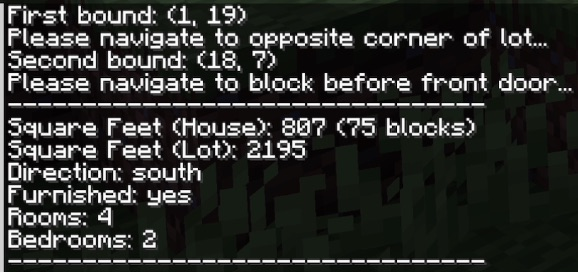
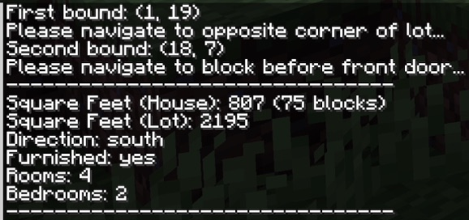

WELCOME
Hello! My name is Quinn Koster. I study computer science at UC Santa Barbara and am currently most interested in predictive modeling tasks, especially through the use of deep learning. I am currently developing an AI to play GeoGuessr and teaching weekly machine learning workshops to students at UC Santa Barbara as part of the Gaucho Sports Analytics club. Scroll to learn more about me!
ABOUT ME
My Interests (outside of CS)
Making Music
Music has been a part of my life ever since I began learning piano at age 3. Throughout my childhood, my interests and abilities evolved. Around age 9 or 10, I began learning guitar and attending frequent music camps to play and compose music with other young musicians. At age 10, I also began producing songs electronically on programs like GarageBand. Entering high school, and throughout the pandemic and the years that followed, electronic music production has remained my primary passion (plus some jazz piano on the side). At age 17, amidst an intense college application season, I co-produced, mixed and mastered six songs for MasterChef winner and musical hobbyist Dino Angelo Luciano. While I'm at college in Santa Barbara, I continue to play guitar, especially the acoustic.
Cooking
I find immense joy and beauty in cooking—I love to innovate in the kitchen and develop interesting flavor combinations. At the moment, I am particularly drawn to South Indian food.
PROJECTS
My Projects
 

IrrealEstate
The IrrealEstate Minecraft Mod implements aspects of the real-estate marketplace Zillow into the game, allowing the user to efficiently attain details about their Minecraft house including its square footage, the number of rooms and bedrooms, and whether the house is furnished. The algorithm responsible for calculating these details is tailored to account for every game item’s dimensions, properties, and impact on player movement, as well as the characteristics of the player itself. More recently, as a consequence of my developing interest in machine learning, I implemented a feature that leverages house price data to predict the hypothetical values of Minecraft houses on the active market
Learn MoreU.S. Presidential Election Simulator
This tool uses data from past U.S. presidential elections and implements randomization and Gaussian distributions to simulate realistic alternate outcomes. It allows users to dictate the extent to which the simulated results can vary from the true ones. My favorite part of this program is the live map of the simulation results (see video above). The map depends on a feature I implemented that predicts when a state will be projected based on how narrow the race is and when the polls in that state close.
Learn MoreAI Chess Bot
In March 2021, I abruptly developed a strong interest in chess. For the next year, I studied chess strategy and theory and practiced daily through competitive play on chess.com (at one point, my competitive Elo rating was greater than 99.7% of players on the site). I even played an in-person tournament in San Francisco, beating a previous tournament winner. To complement my obsession with chess, I developed an interest in chess-focused programming and compiled several projects to support my studies and build my algorithms and data science skills. One of said projects was this AI Chess bot, written in Python. Building this tool was tricky because it required analysis of thousands of hypothetical move sequences and evaluate resulting board positions at each turn, and Python is notoriously slow. Hence, I had to find ways to speed up my algorithm and reduce node visits to enable deeper computer analysis of promising moves. These strategies included alpha-beta pruning, a preliminary search function, a transposition table, late move reduction, and MVV-LVA (Most Valuable Victim - Least Valuable Aggressor).
Learn MoreUCSBusy
In this team project, I built a model to identify optimal exercise times for students at UC Santa Barbara based on their schedules and the busyness of the school’s Recreation Center. To accomplish this, I conducted exploratory data analysis and wrote a series of scripts with Pandas, Numpy, and Matplotlib that utilized time series data from the Recreation Center to forecast busyness though Poisson Regression. My team and I placed in the Top 8 out of 53 teams in Data Science UCSB’s 2024 Project Series and presented our work to industry professionals at the club’s 2024 Project Showcase.
Learn More